MOST APPLIED-TO TRACK
Cybersecurity & Digital Safety
Learn how attacks actually happen, then practise defending against them in supervised lab work. You finish by securing a system for a real community organisation.
APPLICATIONS ARE CURRENTLY CLOSED
12 WEEKS · BONNY ISLAND
NO COST TO SELECTED PARTICIPANTS
MENTOR-LED · PROJECT-BASED
EIGHT TRACKS TO CHOOSE FROM
DELIVERED BY CEDARS PRODUCTIVITY CENTRE
Twelve weeks of practical training, mentorship and a capstone project, so you finish with a skill you can use and work you can show.
200+ individuals enrolled across Cohort 1 and Cohort 2
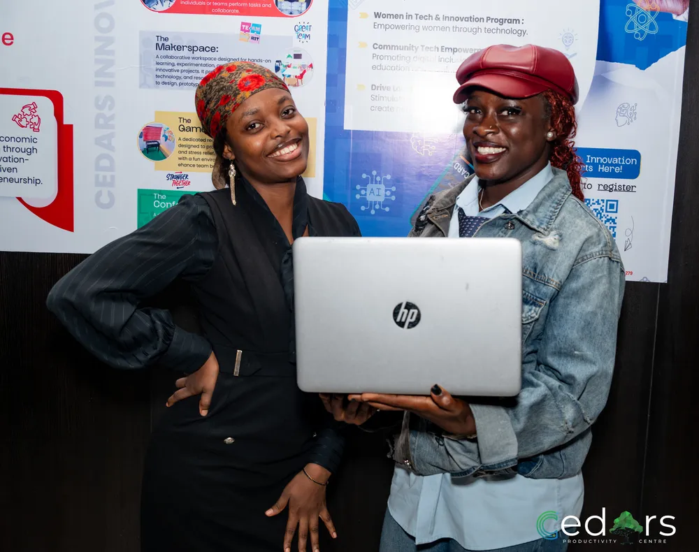
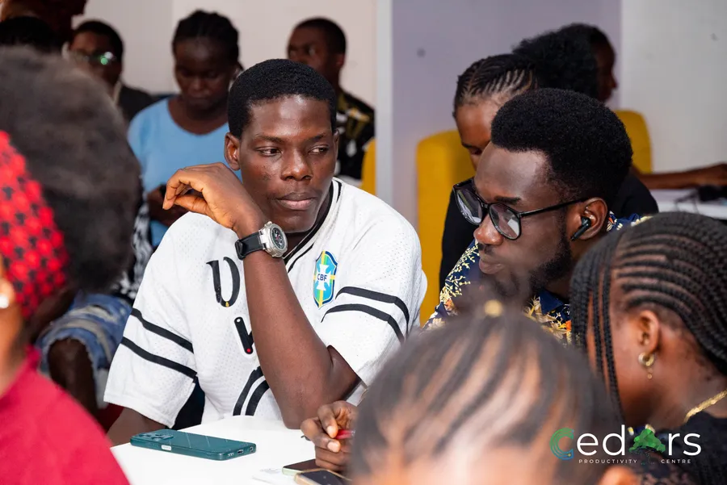
Cybersecurity & Digital Safety
Front-End Development
Back-End Development
Product Design
Graphic Design
AI & Automation
Data Analytics
Social Media Marketing
Capstone Project
Learn how attacks actually happen, then practise defending against them in supervised lab work. You finish by securing a system for a real community organisation.
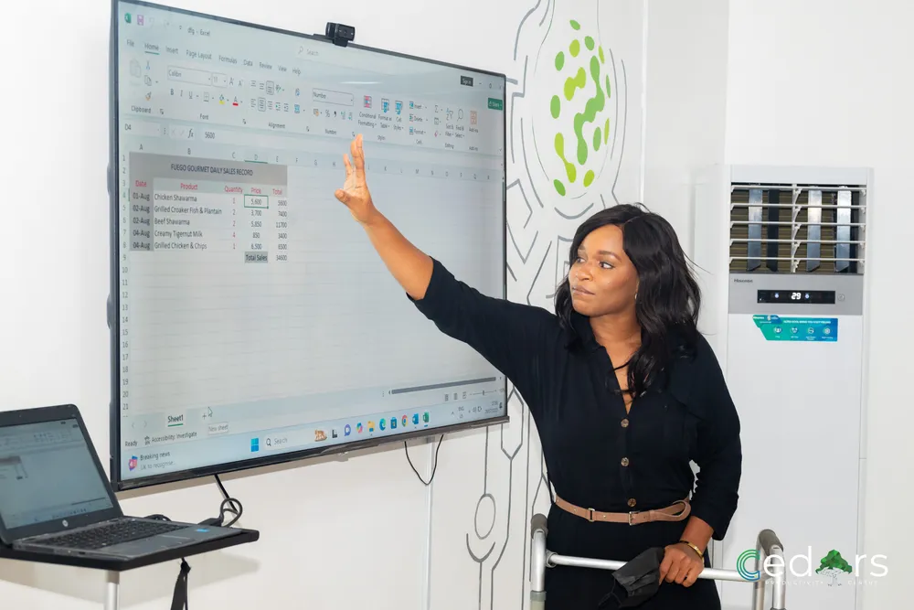
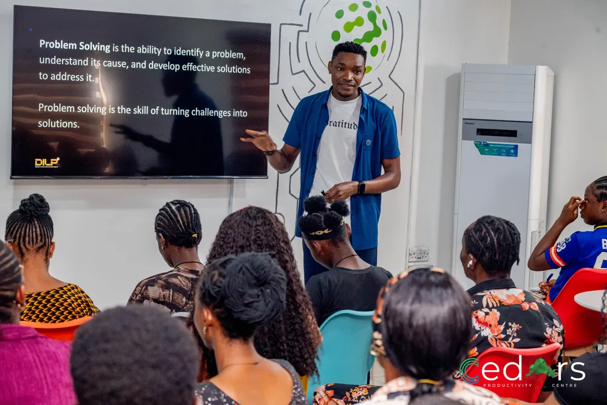
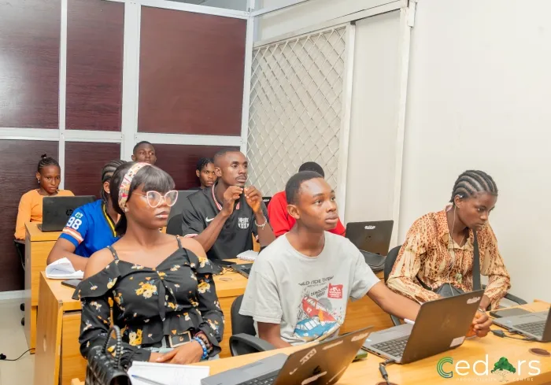
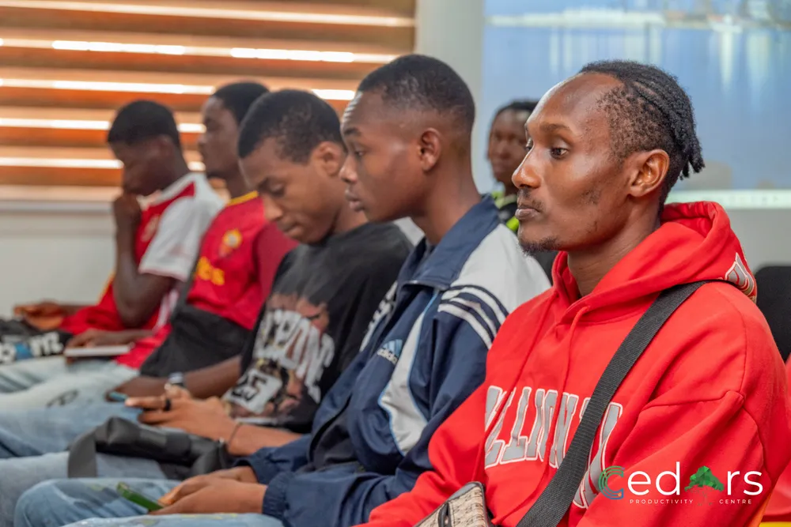
Build the screens people actually use — responsive, accessible and fast.
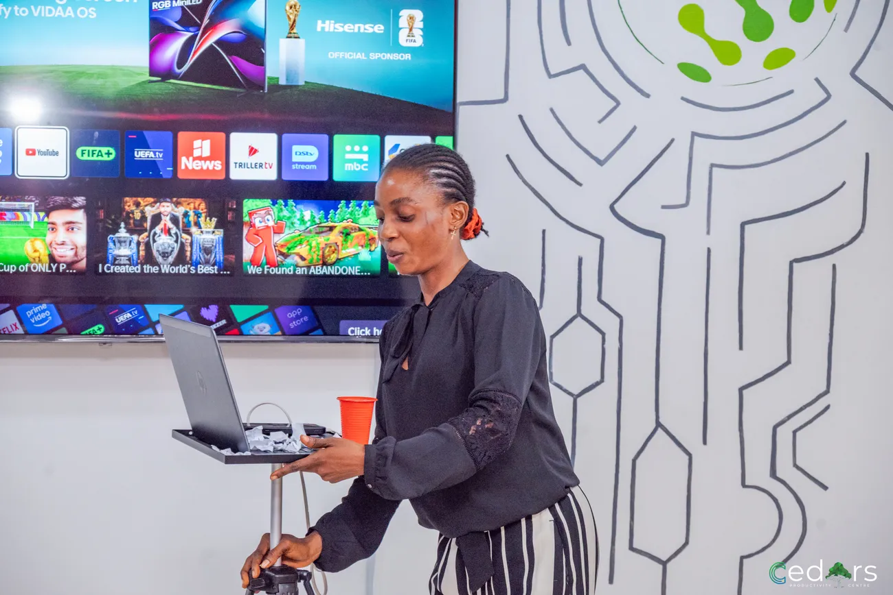
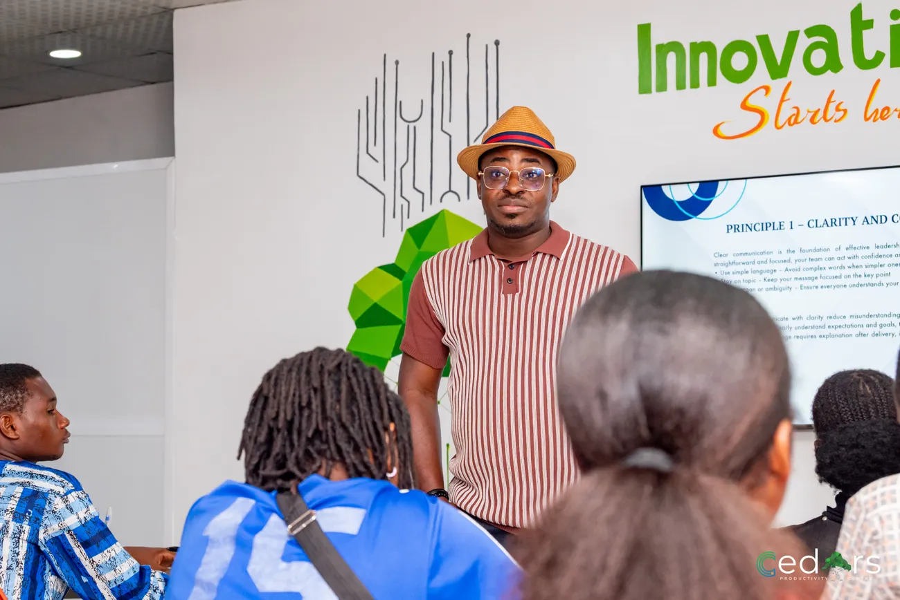

Build a brand people follow — strategy, content and campaigns that convert.
You finish knowing the tools your track runs on well enough to use them without a tutorial open.
Most problems people bring you are described wrong. You learn to find the real one before you start building.
You get put in charge of something small, and you find out what you do when the team disagrees with you.
Turning up on time. Writing a clear update. Saying when you’re stuck. The things that decide whether people want to work with you again.
Where the money comes from, and why most good ideas run out of it before they work. Useful whether you start something or join something.
By week twelve you’ve built something an organisation asked for. That’s the part people ask you about later.
DILP is not a classroom you sit in. You pick a skill, apply it to a real community problem, and leave with work you can show — guided by mentors who do this for a living.
The programme runs on a set structure — learn, practise, build, present, progress. Each week has stated outcomes, supervised practice and a checkpoint, so you always know where you are and what comes next.
Every participant ships a capstone project for a real community organisation. Cohort 1 produced 27 of them. That project — not a certificate alone — is what you show the next person who asks what you can do.
Graduation is a handover, not an ending. Partners open doors to internships, jobs and live briefs, and mentors stay reachable while you take the next step.
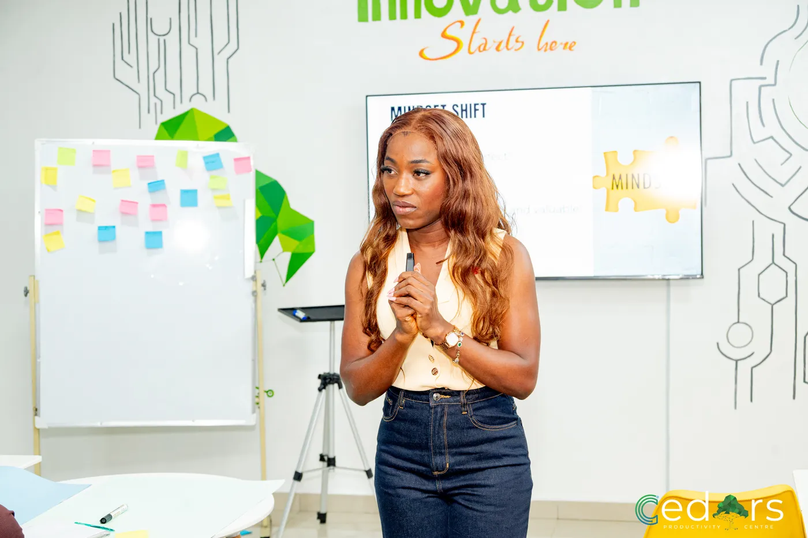
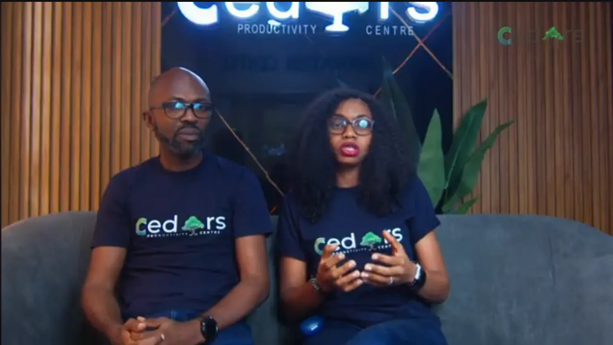

“Learning only counts when you apply it.”
Applications for this cohort are closed
Partners widen access, deepen the work and connect participants to real opportunities. Here is where support goes.
Fund a place so a participant pays nothing.
Give a few hours a month to guide a team.
Supply laptops, tools or connectivity for the cohort.
Open a door to an internship, a job or a live brief.
Yes. DILP is open to young people who can commit to 12 weeks of practical learning in Bonny Island. No prior tech experience is required — applications are assessed on motivation, availability and readiness to work on a real community project.
Nothing. The programme is fully sponsored, so there is no cost to selected participants — training, mentorship and the capstone project are all covered.
Pick the track that matches the work you want to do: Cybersecurity & Digital Safety, Front-End Development, Back-End Development, Product Design, Graphic Design, AI & Automation, Data Analytics or Social Media Marketing. Every track runs the same twelve weeks and ends in a capstone, so the question is which kind of work you want to be doing, not which is shortest.
Sessions run onsite in Bonny Island across the 12 weeks, with supervised practice between them. Expect a consistent weekly commitment — the exact timetable is confirmed with each cohort before it starts.
A skill you can use, a capstone project built for a real community organisation, and a route to what comes next through our partners and mentors.
Applications are reviewed on motivation, availability and readiness to work on a real project. Cohort 1 received 97 applications and admitted 44, so places are limited — apply early.


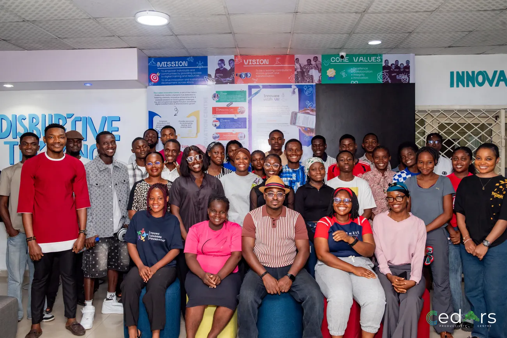
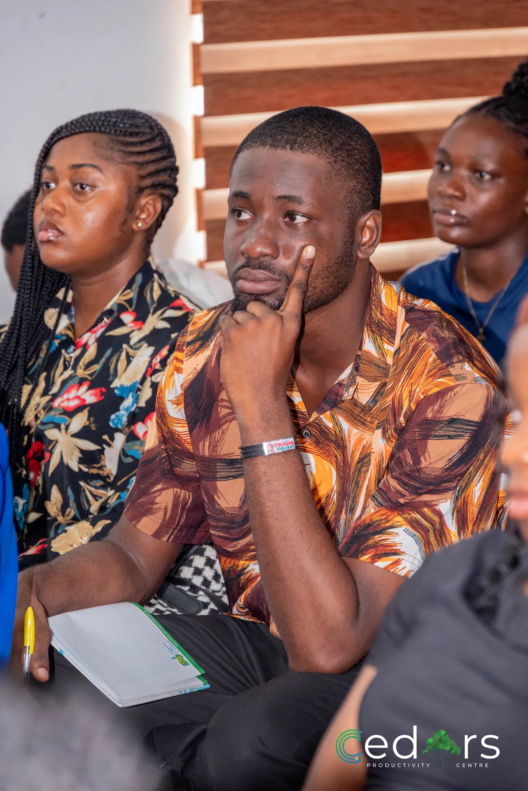
Applications for Cohort 2 are closed. You can still help the next cohort happen — partner with the programme or support a place.